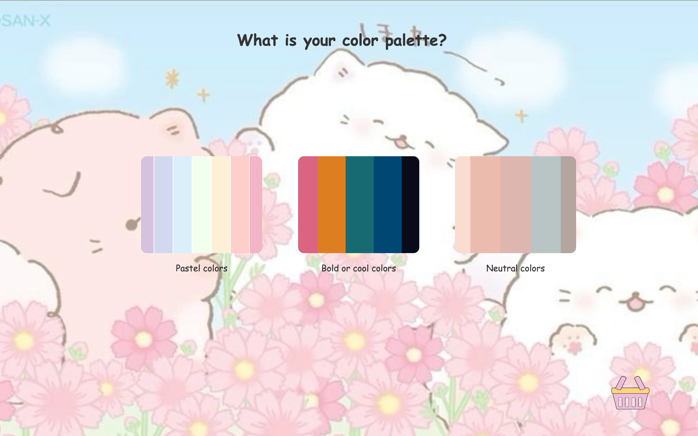
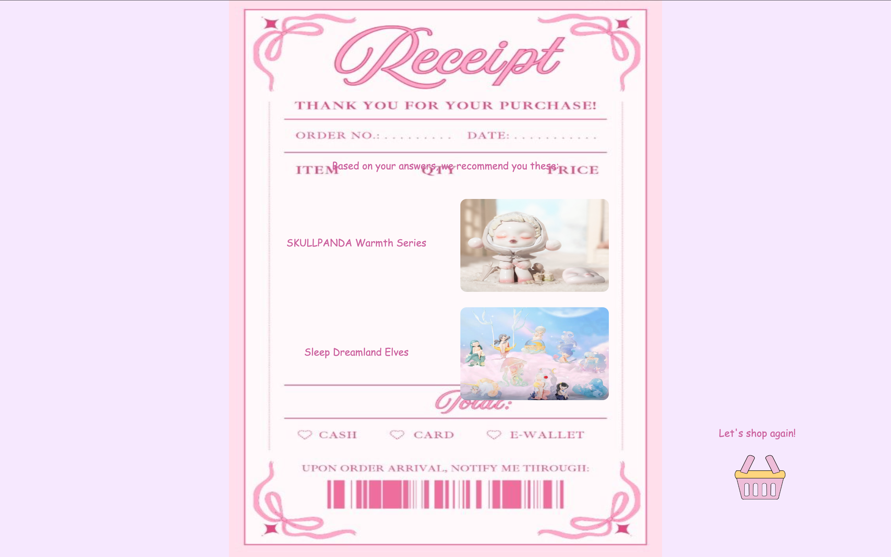

Blindbox Quiz
Crystal Zhou, 2025
A short quiz designed to help newcomers explore the world of blindboxes and get personalized suggestions.



A short quiz designed to help newcomers explore the world of blindboxes and get personalized suggestions.


This short quiz helps those who are new to the blindbox community and unsure where to start. Users answer a series of questions about their interests, and the quiz suggests what type of blindbox they might enjoy. It’s a playful, interactive way to introduce newcomers to collectible blindboxes.
Skills: JavaScript, HTML, and CSS
I built the quiz using JavaScript, storing answers locally with localStorage to calculate results based on user choices. The quiz dynamically provides suggestions based on the selections, making the experience personalized and responsive without requiring a backend.